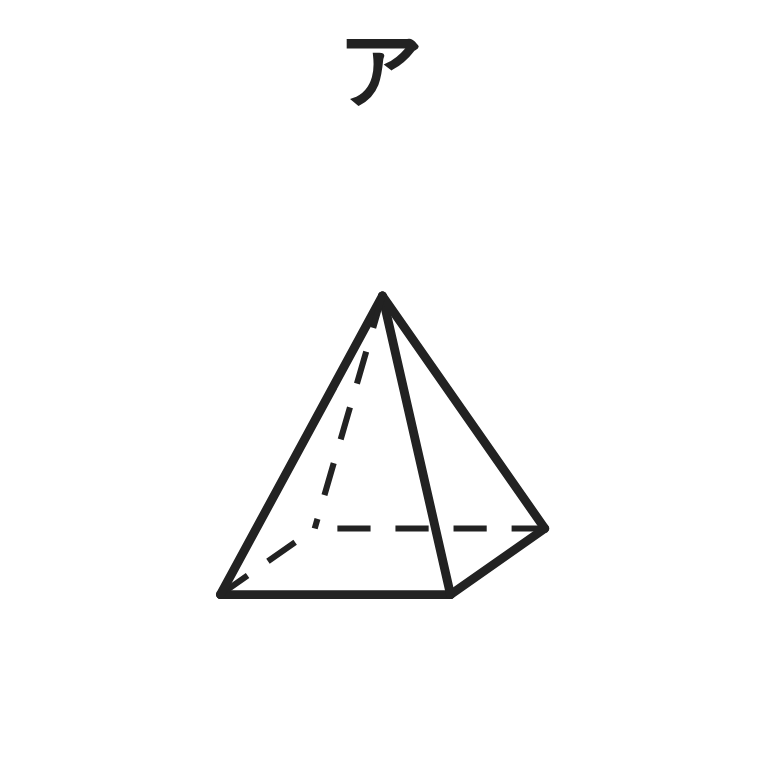
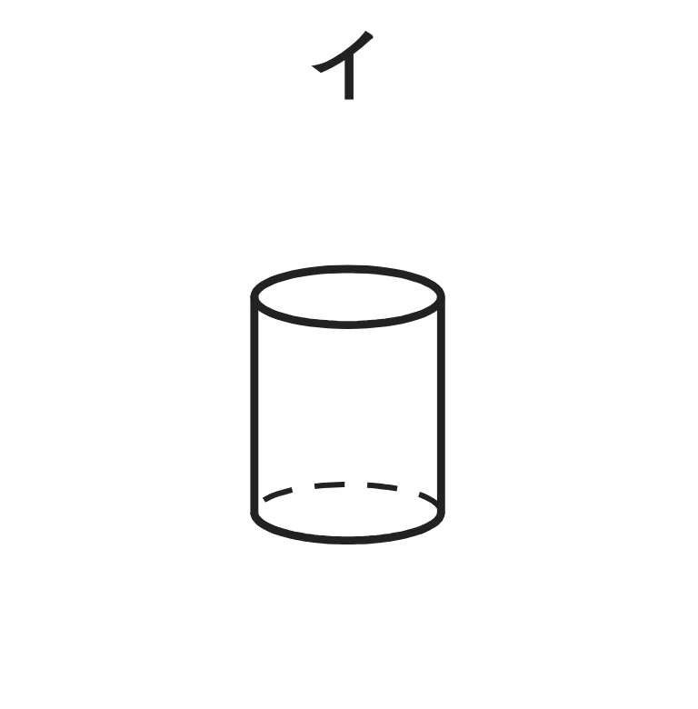
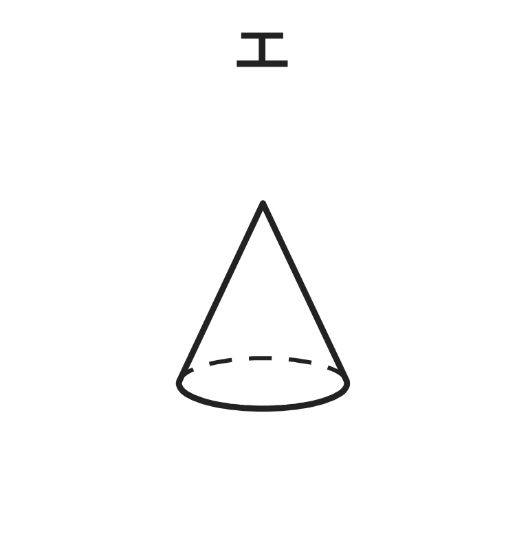
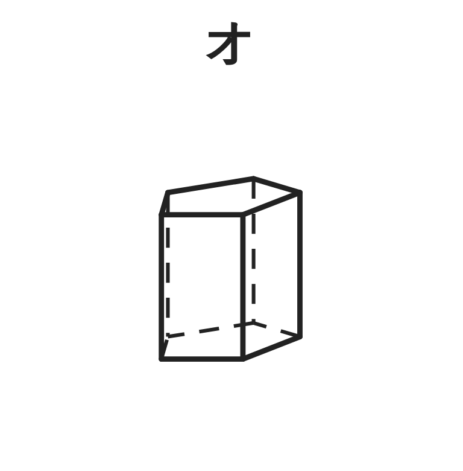
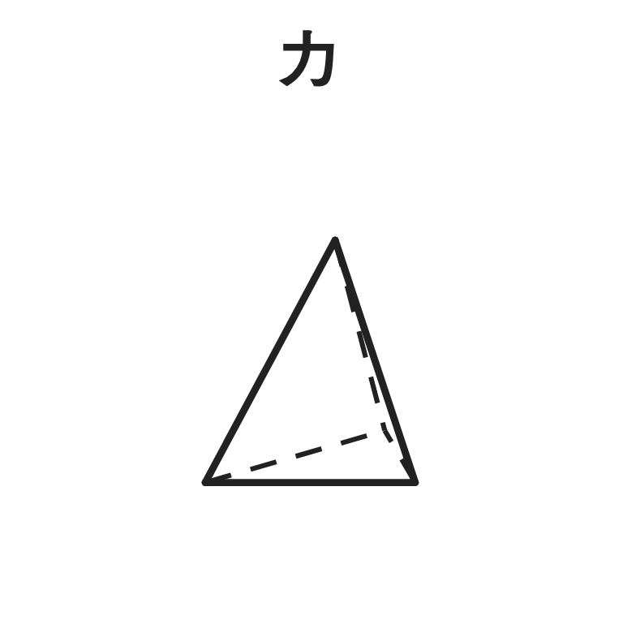

ペア学習
第1時 立体を仲間分けして、特徴をとらえよう
知っている立体の名前を、ペアで出し合おう
1人1つずつ、立体の名前と、その形の特徴を言う。小学校で習った立体や、身のまわりにある形でもよい。
直方体
立方体
円柱
球
三角柱
空間図形 第1時 立体を仲間分けして、特徴をとらえよう
めあて
第1時 立体を仲間分けして、特徴をとらえよう
立体の特徴を、底面や側面の形、面の数でとらえよう
学習課題
ア〜カの立体を、自分で観点を決めて、仲間分けしよう。






自分の仲間分け：観点（どこに目をつけたか）と、分け方を書こう。ペアと見くらべよう。
空間図形 第1時 立体を仲間分けして、特徴をとらえよう
学習課題のまとめ
第1時 立体を仲間分けして、特徴をとらえよう
ア〜カの立体を、自分で観点を決めて、仲間分けしよう。
（例）観点と、分け方
底面が 2つか 1つか … イ・ウ・オ ／ ア・エ・カ
平面だけで囲まれているか … ア・ウ・オ・カ ／ イ・エ
観点を決めると、仲間に分けられる
空間図形 第1時 立体を仲間分けして、特徴をとらえよう
ことば
第1時 立体を仲間分けして、特徴をとらえよう
底面が 2つ（合同で平行）の立体 … ・
底面が 1つで、先がとがった立体 … ・
底面以外の、まわりの面 …
平面だけで囲まれた立体 …
空間図形 第1時 立体を仲間分けして、特徴をとらえよう
ことば
第1時 立体を仲間分けして、特徴をとらえよう
底面が 2つ（合同で平行）の立体 … 角柱・円柱
底面が 1つで、先がとがった立体 … 角錐・円錐
底面以外の、まわりの面 … 側面
平面だけで囲まれた立体 … 多面体
空間図形 第1時 立体を仲間分けして、特徴をとらえよう
例題
第1時 立体を仲間分けして、特徴をとらえよう
次の立体の、側面の形と、面・辺・頂点の数を調べて、表を完成させよう。
| 立体 | 三角柱 | 四角柱 | 五角柱 | 三角錐 | 四角錐 |
|---|---|---|---|---|---|
| 側面の形 | 長方形 | ||||
| 面の数 | 5 | ||||
| 辺の数 | 9 | ||||
| 頂点の数 | 6 |
三角柱は、いっしょに数えよう。辺の数を、数え落としなく数えるくふうも、書こう。
空間図形 第1時 立体を仲間分けして、特徴をとらえよう
例題 解答
第1時 立体を仲間分けして、特徴をとらえよう
| 立体 | 三角柱 | 四角柱 | 五角柱 | 三角錐 | 四角錐 |
|---|---|---|---|---|---|
| 側面の形 | 長方形 | 長方形 | 長方形 | 三角形 | 三角形 |
| 面の数 | 5 | 6 | 7 | 4 | 5 |
| 辺の数 | 9 | 12 | 15 | 6 | 8 |
| 頂点の数 | 6 | 8 | 10 | 4 | 5 |
数え方のくふう
底面にいくつ、側面にいくつ、と分けて数える。
（例）五角柱の辺：底面 5×2＝10、側面 5 → 15
空間図形 第1時 立体を仲間分けして、特徴をとらえよう
考えよう
第1時 立体を仲間分けして、特徴をとらえよう
表の立体について、（頂点の数）−（辺の数）＋（面の数）を計算しよう。どんなことに気づくだろう。
①
表の5つの立体を、計算しよう。
②
気づいたことを書こう。
③
ほかの立体を1つ選んで、①と同じように確かめよう。（立体の名前・面・辺・頂点・計算）
立ち歩いて、教え合おう。ゴールは、考えようを、全員が説明できること。
空間図形 第1時 立体を仲間分けして、特徴をとらえよう
振り返り
第1時 立体を仲間分けして、特徴をとらえよう
今日のめあて
立体の特徴を、底面や側面の形、面の数でとらえよう
底面
側面
角柱
円柱
角錐
円錐
多面体
今日わかったことを、ペアで1つずつ言い合おう。
ワークシートと演習プリントを出そう。（未完成でも出す）
空間図形 第1時 立体を仲間分けして、特徴をとらえよう